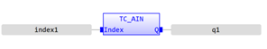
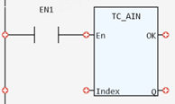

I/O Function.
Reads a value from an analogue input.
|
Index: INT; |
The analogue input channel number |
|
Q: INT; |
Analogue input value |
This function reads a value from an analogue input. The value returned is the decimal equivalent of the binary number read from the analogue to digital (A to D) converter.
( INT ):= TC_AIN (Index:= ( INT ));


Not available.